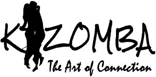

 La Kizomba est le résultat d’une évolution. Le mot désigne à la fois un style de musique et un style de danse. Kizomba est un mot angolais qui signifie “fête” en Kimbundu, une des langues les plus répandues en Angola au sein du groupe ethnique des Bantu. L’expression angolaise Kizombadas telle qu’elle était utilisée au cours des années ’50 référait à une grande fête mais n’établissait pas, comme elle le fait actuellement, de lien avec la danse et la musique. Les danses traditionnelles nommées Semba, Kabetula, Kasukuta, Maringa, Caduque, Rebita, Cidralia, Dizanda furent à l’époque prédominantes. La plupart d’entre elles sont en première instance des danses de carnaval. Vous pouvez en découvrir un grand nombre séparément à l’occasion du “Carnaval da Victoria”, qui se déroule à Luanda, capitale de l’Angola. Ce carnaval ainsi que celui de Lobito de la province de Benguela ont popularisé ces danses dans l’ensemble du pays et continuent de promouvoir la culture angolaise.